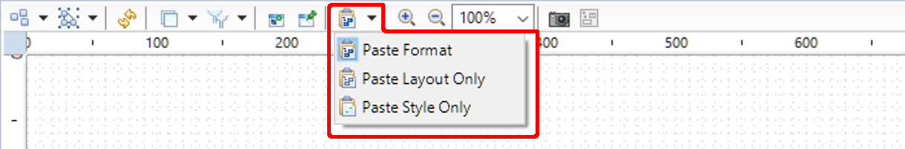

that allows to copy all common style attributes from the last selected shapes to all other selected shapes.
that allows to copy all common style attributes from the last selected shapes to all other selected shapes.
Summary: Have the capability to also paste style along with the layout.
| Version | Status | Date | Authors | Changes |
|---|---|---|---|---|
| v0.1 | DRAFT | 2016-06-22 | lredor | Initial version. |
| v0.2 | DRAFT | 2016-06-23 | lredor | Add improvement and limitations. |
| v0.3 | PROPOSED | 2016-06-23 | lredor | Internal review. |
Relevant tickets:
Currently there are two kinds of copy/paste in Sirius:
target reference of
DSemanticDecorator). It is possible to apply specific rules for matching between source semantic elements and target semantic elements with the
org.eclipse.sirius.diagram.ui.layoutDataManager extension point.
In addition to these, there is also an
Apply Appearance Properties action that allows to copy all common style attributes from the last selected shapes to all other selected shapes.
The goal of this evolution is to have a copy/paste format feature (in replacement of the existing copy/paste layout feature). This new feature extends the copy/paste layout feature with the style notions (with the same behavior as Apply Appearance Properties action). The standard copy/paste mechanism is not impacted in any way by this change.
The user interaction will be the same as the current copy/paste layout feature. As a reminder, currently the end-user must:
Edit/Copy layout, or corresponding icon in tab-bar  )
)
Edit/Paste layout, or corresponding icon in tab-bar )
The feature will be renamed in
Copy/Paste Format. There is one action for
Copy and 3 actions for
Paste:
The Paste Layout Only action is equivalent to the current behavior when the user calls the Paste Layout action.
The
Paste Style Only action will replicate the style, by default, on graphical elements representing the same semantic element (same
target reference of
DSemanticDecorator). All the source elements style properties (customized or not) will be applied to the target elements as custom styles if they are different than the default ones. That means, for example, if the copied element background is different from the one to paste, the background will appear as a custom feature. If the background is the same, nothing is modified.
The paste style will have a similar behavior to the
Apply Appearance Properties action, but with a different workflow.
It will be also possible to use the same extension point as for Paste Layout action to customize the matching between source elements and target elements.
This action is a combination of both above actions. The layout and the style will be pasted.
To default paste behavior, when called from the keyboard shortcut, will be a paste format (layout and style). In the tab-bar and in the contextual menu, there is the possibility to launch the 3 kinds of paste.

This sketch shows the future menu.

Copy Format button in tab-bar

Paste buttons in tab-bar. All 3 actions are represented with a drop-down button. At the opening of a diagram, the action
Paste Format is the default one. Then, the drop-down button retains the last used action in the diagram.
The current
Apply Appearance Properties action is handled by
org.eclipse.sirius.diagram.ui.tools.internal.actions.SiriusCopyAppearancePropertiesAction (that creates an
org.eclipse.gmf.runtime.diagram.ui.internal.requests.ApplyAppearancePropertiesRequest) and then by
org.eclipse.sirius.diagram.ui.graphical.edit.policies.SiriusPropertyHandlerEditPolicy.
The
SiriusPropertyHandlerEditPolicy copies the «Sirius style attributes» (
SiriusPropertyHandlerEditPolicy.buildApplyAppearancePropertiesCommand(ApplyAppearancePropertiesRequest)) and the «GMF style attributes» by using
org.eclipse.gmf.runtime.diagram.core.util.ViewRefactorHelper.copyViewAppearance(View, View, List).
The
CopyLayoutAction and
PasteLayoutAction from
org.eclipse.sirius.diagram.ui.tools.internal.actions.layout will be adapted and renamed to correctly handle this new feature. This is the same for the associated commands
CopyLayoutDataCommand and
PasteLayoutDataCommand. Both of them use the
org.eclipse.sirius.diagram.ui.tools.api.layout.SiriusLayoutDataManager from the extension point
org.eclipse.sirius.diagram.ui.layoutDataManager.
For the copy/paste layout, if the selection is an edge for the paste, there is no effect. Indeed, apply the layout an edge is a non sense without applying the layout on its source node and target node layout. For the style, it is not the same; it’s authorized for an end-user to copy the style of an edge to another. This case must now be handled in the paste style only and if the paste format is launched in this case, only the style will be paste (must be documented in the end-user documentation).
There is a limitation in the current
Apply Appearance Properties action. Indeed, if in the selection there are both containers and nodes, the Sirius style is only applied to elements of the same kind as the source. Only the GMF style is applied (and therefore passed to some Sirius style attributes with pre-commit listeners). For example, the color attributes are not copied from a node to a container (and conversely).
List (non exhastive) of attributes not copied from node to container (and conversely):
In other words, there are only few label attributes that are copied in this case:
The feature Apply Appearance Properties is probably, most of time, used for shapes of same type, this is why this limitation was not problematic. In the scope of this feature, we consider that it is the same. Another improvement will be to match individually each style attributes between a node style and a container style.
The Sirius meta-model is not impacted by this feature.
To avoid a too important API break in Sirius 4.1, we can not rename the extension point and all the linked classes that speak about LayoutData. So they will be kept for this version but they will become deprecated. They will be removed in Sirius 5.0 in favor of the new
org.eclipse.sirius.diagram.ui.formatDataManager extension point, and associated classes, added in Sirius 4.1.
We can not just keep the existing extension point and classes because there will be an inconsistency between the naming and the meaning.
The
org.eclipse.sirius.diagram.layoutdata.AbstractLayoutData will be completed with:
org.eclipse.sirius.viewpoint.Style that is a copy of the style of the current
DDiagramElement
org.eclipse.gmf.runtime.notation.View that is a copy of the
View representing the current
DDiagramElement. The
element field of this copy will be cleaned to avoid possible cross-references to this copy.

These fields will be set during the copy action with the
SiriusLayoutDataManager.storeLayoutData(IGraphicalEditPart). And they are then use when
SiriusLayoutDataManager.applyLayout((IGraphicalEditPart) is called.
As described in the Detailed Specification section, the diagram contextual menu and edit menu will have additional entries for the new paste options. The old Copy Layout and Paste Layout actions will also be renamed in Copy Format and Paste Format. The Paste actions will appear in a drop-down menu in the tab-bar.
The User documentation will be updated to describe the new behavior of the Copy/Paste Format feature (in replacement of the current Copy/Paste Layout ).
The documentation of the extension point must also be adapted.
Starting from a typical diagram with lists, containers, nodes, border-nodes and with an exhaustive list of customized styles, we should test the different combinations of copy/paste:
For each combination, check the behavior with and without the use of the extension point.
Another improvement will be to have a «Brush» action , like in many other tools. We retrieve the same behavior but with a different workflow:
We can also imagine a global copy/paste mechanism (with semantic part). This is the goal of the bugzilla 491895.
As explained in Known limitation of Apply Appearance Properties chapter, another improvement will be to enhance the copy/paste style between a node and a container (and conversely).